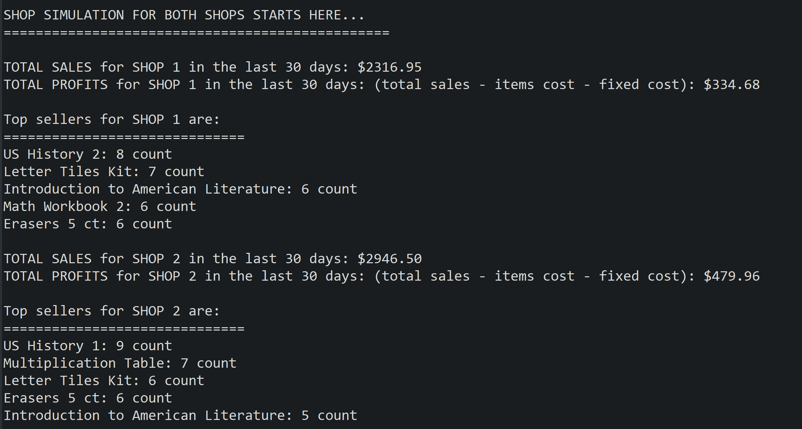

This project simulates economic activity of a small school supply store. The idea behind this simulation allowed me to combine my background in Economics as well as my love of programming. As about anything in Economics, this project relies on a number of assumtions. I will mention them further in the text as they become relevant to the story.
Supply side is represented by the class Shop that controls the shop’s inventory. Initially inventory items are stored in .txt files and loaded at the start of the program. The demand side of the simulation is represented by the generic class Customer. Customer’s buying preferences may vary from items belonging to a particular class (such as Book or Supplies) to items of certain category (math, science, language arts, history). To introduce some uncertainty into the simulation, customer preferences are chosen at random.
This project was completed in several iterations over the course of the 6 week class. In the first several iterations, all inventory items are loaded into a hashmap structure that maps a key to a every item in the inventory. Customer's participation is determined by a random variable between 0 and 1. If the value of that variable is greater than .5 for a given (logical day) than the program creates an instance of a Customer with a randomly assigned buying preference and budget. Customer's buying preference determines what set of items the customer is going to spend his budget on. Buying choices within that set are also determined randomly. The assumption is that the Customer is willing to spend as much of his budget as possible without going over the budget.
Simulation runs for 30 logical days and then haults. The user can then choose to continue for another 30 days or quit. A typical run for a logical day may look like the one above. If the customer was created the program specifies what preference and budget were assigned to that customer. Then the program lists the number of items that the customer bought in the store. I had an idea to implement a system of related items purchases where the customer is more likely to buy items related to each other, such as math textbook and math workbook. Unfortunately, I did not have enough time to put this system in place.
Restocking warning seen above represents low inventory. The program set a certain threshold for inventory items. If the available quantity of any item would fall below that level, the inventory would issue a restocking warning and restock those particular items. If you click over the output above, you will see the output for two other days. Notice that day 26 has no sales because there were no customers on that day.
To experiment with multiple threads, I created two shops that run concurrently, each in its own thread. Simulation still runs for 30 logical days and then prints out the report about the sales, profits and top ten items most in demand for that period. I used locks to print out the reports so that results of the simulation are displayed together for each shop. You can see a sample output on the left.
For the last iteration, we experimented with JDBC and SQLLite. I created a small database that contained the inventory items and ran several SQL queries.